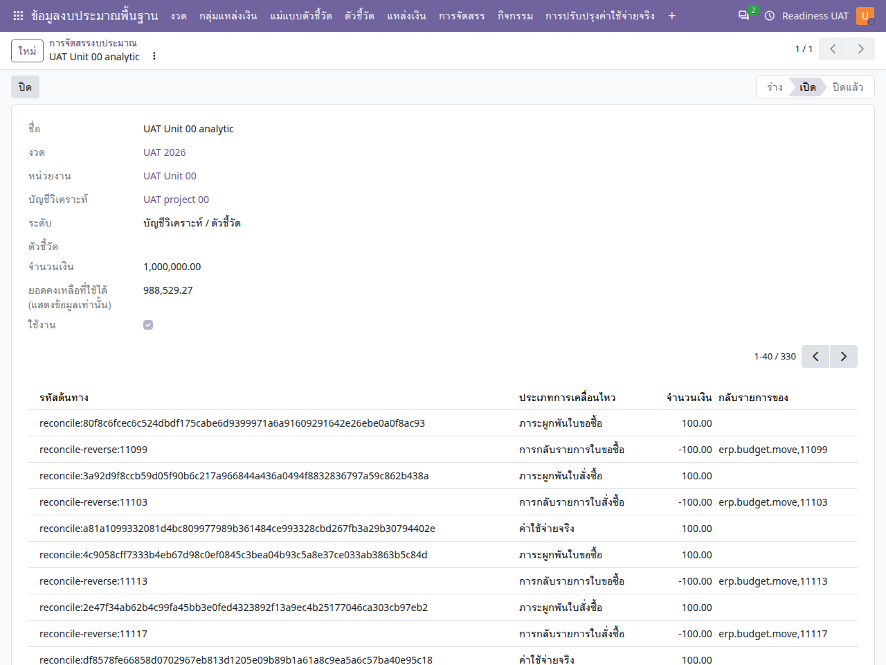

คู่มือการใช้งาน
ข้อมูลงบประมาณพื้นฐาน
เตรียมแผนและวงเงิน ติดตามภาระผูกพัน และดำเนินการปรับปรุงโดยรักษาประวัติ
ไม่พบข้อความ ลองใช้คำอื่นหรือล้างคำค้นหา
เริ่มใช้งานและอ่านหน้าจอ
เปิดแอปจากเมนูหลัก แล้วเลือก คู่มือการใช้งาน คู่มือเปิดในแท็บใหม่เพื่อให้ดูพร้อมหน้าทำงานได้ เลือกแอปอื่นจากรายการด้านซ้าย หรือค้นหาคำในคู่มือนี้ และใช้ปุ่มพิมพ์ / บันทึก PDF เมื่อต้องการสำเนา
- ตรวจบริษัทที่มุมขวาบนและหน่วยงานในเอกสารก่อนสร้างหรืออนุมัติ เมนูและปุ่มขึ้นกับสิทธิ์ของบัญชี
- หลังแก้ข้อมูล ให้ใช้ปุ่มบันทึก / ไอคอนบันทึกตามที่แบบฟอร์มแสดง แล้วตรวจสถานะและเลขเอกสารก่อนออกจากหน้า
- ภาพประกอบเป็นข้อมูลจำลอง ชื่อรายการ ภาษา หรือเลขเอกสารอาจต่างจากบัญชีของคุณ ตัวเลขในภาพไม่ใช่ค่าที่ต้องกรอก
- ข้อความผิดเงื่อนไขให้จดเลขเอกสารและข้อความที่แสดง ส่งให้ผู้รับผิดชอบงานตรวจ อย่าส่งรหัสผ่านหรือข้อมูลเข้าสู่ระบบ
- ถ้าคู่มือเปิดแล้วภาพหรือภาษาเก่าค้าง ให้บันทึกงานในหน้าระบบก่อน แล้วรีเฟรชแท็บคู่มือ
อ่านภาพรวมก่อนเริ่ม
- งวดและข้อมูลหลัก
- แผน / การจัดสรร
- เปิดวงเงินควบคุม
- ผูกพันและใช้จริง
- ปรับปรุง / โอน / ยกยอด
ตัวเลขงบประมาณเกิดจากเอกสารต้นทางร่วมกัน ยอดแผน วงเงินที่เปิด ภาระผูกพัน และใช้จริงมีความหมายต่างกัน การบันทึกแผนอย่างเดียวไม่ได้เปิดสิทธิ์ใช้จ่าย
เตรียมข้อมูลหลัก
- ตรวจบริษัท หน่วยงาน และงวดงบประมาณ เลือกงวดที่ครอบคลุมวันที่ทำรายการ
- ตรวจกลุ่มแหล่งเงิน แหล่งเงิน บัญชีงบประมาณ กิจกรรม บัญชีวิเคราะห์ และแม่แบบ KPI ที่ต้องใช้
- ในงวดที่ใช้กระบวนการอย่างเป็นทางการ ให้ผู้จัดการตรวจนโยบายแผนและลำดับผู้ตรวจทานก่อนสร้างวงเงิน
- ระบุที่มาหรือเลขอ้างอิงของยอดยกมาตามเอกสารจริง ไม่สร้างรายการใช้จริงเพื่อทำให้ยอดรวมตรง
แผนและการจัดสรร
ข้อมูลงบประมาณพื้นฐาน → แผนงบประมาณ / การจัดสรรแหล่งเงิน
- สร้างรายการร่าง ระบุงวด หน่วยงาน และมิติงบประมาณให้ครบตามช่องในแบบฟอร์ม
- ตรวจยอดระดับบัญชีวิเคราะห์และแหล่งเงินร่วมกับแผนที่เกี่ยวข้อง แล้วใช้ปุ่มยืนยันหรือเสร็จสิ้นตามประเภทเอกสาร
- เปิดวงเงินควบคุมเมื่อผ่านขั้นตอนที่กำหนด ในงวดที่ต้องปล่อยวงเงิน KPI ต้องส่งและให้ผู้ตรวจตามลำดับอนุมัติ
- ตรวจสถานะหลังทำรายการและยอดที่มีผลจริงก่อนนำไปออกใบขอซื้อ
ติดตามวงเงินและการใช้จริง
ข้อมูลงบประมาณพื้นฐาน → การจัดสรร

| ยอด / ข้อมูล | ใช้พิจารณา |
|---|---|
| วงเงิน | ความจุที่มีผลตามแผนและเวอร์ชันที่อนุมัติ |
| ผูกพัน | ยอดที่กันจากคำขอซื้อ ใบสั่งซื้อ หรือสัญญาตามต้นทาง |
| ใช้จริง | ยอดที่รับรู้จากการลงบัญชีเอกสารต้นทาง |
| คงเหลือ | ตรวจร่วมกับมิติและยอดอื่นที่แสดง ห้ามรวมวงเงินแหล่งเงินและบัญชีวิเคราะห์เสมือนเป็นเงินสองก้อน |
- เปิดวงเงินที่ตรงงวด หน่วยงาน และมิติของรายการต้นทาง
- ตรวจยอดและสถานะก่อนอนุมัติรายการปลายทาง หากวงเงินไม่พอให้ทบทวนต้นทางหรือจัดทำการปรับปรุงตามสิทธิ์
- เมื่อยอดเปลี่ยน ให้ตรวจเอกสารอ้างอิงและการกลับรายการก่อนสร้างเอกสารแก้ไขเพิ่ม
ปรับวงเงินและโอนงบประมาณ
- เริ่มจากเอกสารที่มีผลแล้ว ใช้ เตรียมการปรับปรุง เพื่อสร้างข้อเสนอฉบับใหม่
- แก้รายการร่าง ระบุเหตุผล และตรวจว่ายอดใหม่รองรับยอดผูกพันหรือใช้จริงเดิม
- ส่งขั้นตอนแผนและการตรวจทานที่แบบฟอร์มกำหนด แล้วใช้ปุ่มเปิดใช้เมื่อผ่านเงื่อนไข
- กรณีโอน ให้ระบุต้นทางและปลายทางให้ครบ ส่งตรวจ อนุมัติ และใช้การโอนตามสถานะของเอกสาร ตรวจทั้งสองด้านหลังทำรายการ
- หากต้องย้อนผล ใช้กระบวนการกลับรายการหรือข้อเสนอถัดไป ระบบรักษาตัวตนวงเงินและรายการบัญชีงบประมาณเดิม
ยกยอดและยอดตั้งต้น
การยกยอดคงเหลือ การยกยอดผูกพัน และการกระทบยอดตั้งต้นเป็นคนละกระบวนการ เปิดเอกสารที่ตรงงาน ตรวจยอดและรายการต้นทาง แล้วใช้ขั้นตอนตรวจทานก่อนยกยอด การคืนยอดใช้ข้อเสนอคืนและลำดับอนุมัติตามแบบฟอร์ม ไม่แก้ประวัติยอดยกมาโดยตรง
แก้ปัญหาที่พบ
| ข้อความ / อาการ | สิ่งที่ควรทำ |
|---|---|
| วงเงินไม่พอ | ตรวจทุกมิติที่ต้นทางใช้และยอดที่มีผลแล้ว ไม่แก้เฉพาะยอดแผนที่ยังร่าง |
| ลดวงเงินหรือเอามิติออกไม่ได้ | ตรวจภาระผูกพัน ใช้จริง และยอดขั้นต่ำของข้อมูลเดิมก่อนเตรียมฉบับใหม่ |
| ผู้ตรวจอนุมัติไม่ได้ | ตรวจว่าถึงลำดับของผู้ใช้ มีสิทธิ์บริษัทและหน่วยงาน และไม่ติดข้อห้ามอนุมัติรายการตนเอง |
| รายการปลายทางลงบัญชีแล้วแต่ยอดไม่ตรง | จดเลขเอกสารและช่วงเวลา ให้ผู้รับผิดชอบตรวจต้นทางและการกลับรายการ หลีกเลี่ยงบันทึกใช้จริงซ้ำ |
FAQ: การตั้งค่าและเปลี่ยนสกุลเงิน
ใช้ได้กับทุกแอป โดยแยกสกุลเงินบริษัทออกจากสกุลเงินเอกสาร รหัส THB (฿) คือเงินบาท และ USD ($) คือดอลลาร์สหรัฐ การเปลี่ยนภาษาเป็นไทยไม่เปลี่ยนสกุลเงินจริง
1. ต้องการใช้เงินบาททั้งระบบ ต้องตั้งที่ไหน?
ให้ผู้ดูแลที่มีสิทธิ์จัดการบริษัท เลือก การตั้งค่า → บริษัท → เปิดบริษัทที่ต้องการ → ข้อมูลทั่วไป → สกุลเงิน แล้วเลือก THB และบันทึก ควรกำหนดก่อนเริ่มตั้งค่าบัญชีและสร้างเอกสารธุรกิจ ตรวจประเทศและผังบัญชีให้ตรงกับการใช้งานด้วย ค่าเริ่มต้น THB ของชุด ERP นี้ใช้กับบริษัทใหม่ โดยบริษัทสาขาอาจรับสกุลเงินจากบริษัทแม่ และการระบุสกุลเงินอื่นอย่างชัดเจนยังมีผล
สกุลเงินบริษัทเป็นค่าหลักของงบประมาณ บัญชี และรายงานหลายประเภท เอกสารซื้อหรือรายจ่ายยังใช้สกุลเงินต่างประเทศได้ตามสิทธิ์และการตั้งค่า จึงไม่ใช่การบังคับให้เอกสารทุกฉบับแสดง ฿
2. ทำไม admin เปลี่ยนสกุลเงินบริษัทไม่ได้?
ถ้ามีข้อความว่า คุณไม่สามารถเปลี่ยนสกุลเงินของบริษัทได้ เนื่องจากมีรายการสมุดรายวันบางรายการอยู่ แสดงว่าระบบพบประวัติรายการบัญชีแล้ว ข้อจำกัดนี้ใช้กับ admin ด้วย และอาจรวมบริษัทแม่/สาขาที่เกี่ยวข้อง การมีเพียงชื่อสมุดรายวันกับการมีรายการบัญชีเป็นคนละเรื่อง อย่าลบรายการบัญชีหรือฝืนแก้ฐานข้อมูลเพื่อปลดล็อก
สำหรับการทดลอง ให้ผู้ดูแลสร้างบริษัททดลองใหม่ ตั้งประเทศและสกุลเงิน THB ก่อนเริ่มงาน เตรียมผังบัญชีและสมุดรายวัน แล้วกำหนดสิทธิ์ผู้ใช้ หน่วยงาน คลัง และข้อมูลพื้นฐานที่แอปนั้นต้องใช้ จากนั้นเลือกบริษัทใหม่ที่มุมขวาบน บริษัทและเอกสาร USD เดิมยังคงเดิม การเพิ่มบริษัทไม่ใช่การแปลงยอดหรือย้ายประวัติเดิม สำหรับการเปลี่ยนระบบใช้งานจริงต้องวางแผนย้ายยอดกับผู้รับผิดชอบบัญชี
3. แอปนี้เลือกหรือเปลี่ยนสกุลเงินตรงไหน?
วงเงิน แผน การจัดสรร และยอดควบคุมใช้สกุลเงินบริษัท ไม่มีช่องเปลี่ยนเป็นรายวงเงิน หากต้องการวงเงินเป็นบาท ให้สร้างแผนในบริษัท THB ส่วนเอกสารซื้อหรือรายจ่ายต่างประเทศจะถูกคำนวณเป็นสกุลเงินบริษัทตามนโยบายและอัตราที่ระบบบันทึกไว้
4. ไม่พบ THB หรือไม่เห็นช่องสกุลเงิน ต้องทำอย่างไร?
ให้ผู้จัดการบัญชีตรวจที่ ออกใบแจ้งหนี้/การบัญชี → การกำหนดค่า → บัญชี → สกุลเงิน ว่า THB และสกุลเงินที่ต้องใช้เปิดใช้งานอยู่ การเปิดใช้หลายสกุลเงินและสิทธิ์ผู้ใช้อาจเป็นเงื่อนไขให้ช่องสกุลเงินปรากฏ ชื่อเมนูอาจต่างตามสิทธิ์และภาษา
ก่อนใช้เงินต่างประเทศ ให้ผู้รับผิดชอบบัญชีกำหนดอัตราแลกเปลี่ยนของบริษัทและวันที่ที่เกี่ยวข้อง ตรวจทิศทางอัตราตามที่หน้าจอแสดง ไม่ถือว่าระบบดึงอัตราให้อัตโนมัติเสมอ หากเอกสารมีอัตราที่ระบบบันทึกไว้แล้ว อัตราใหม่ไม่จำเป็นต้องแก้ยอดประวัติย้อนหลัง
5. บัญชีทดลองไม่เห็นการตั้งค่า ต้องใช้ admin เท่านั้นหรือไม่?
ขึ้นกับสิทธิ์ที่ได้รับ ไม่ใช่ชื่อบัญชี บัญชีทดลองถูกซ่อนแอปและการตั้งค่าระบบโดยตั้งใจ ให้ผู้ดูแลที่มีสิทธิ์บริษัทหรือผู้จัดการบัญชีตั้งค่าที่เกี่ยวข้องให้ ผู้ใช้งานทั่วไปเลือกสกุลเงินได้เฉพาะเอกสารที่ตนมีสิทธิ์และยังแก้ไขได้ ไม่ต้องเพิ่มสิทธิ์ผู้ดูแลระบบเพียงเพื่อเลือกสกุลเงินเอกสาร
6. เลือกบริษัท THB แล้ว ทำไมยังเห็น $?
ตรวจบริษัทที่มุมขวาบนก่อน โดยเลือกบริษัทเดียวเมื่อกำลังตรวจยอด จากนั้นตรวจบริษัทและสกุลเงินในเอกสารจริง เอกสาร USD เดิม ใบสั่งซื้อจากผู้ขายต่างประเทศ หรือข้อตกลงที่เชื่อมเอกสาร USD ยังแสดง $ ได้ตามข้อมูลจริง บันทึกงานก่อนโหลดหน้ารายงานหรือแดชบอร์ดใหม่ การเปลี่ยนบริษัทที่กำลังใช้งานไม่ย้ายบริษัทหรือแปลงเงินของเอกสารเก่า
7. เปลี่ยน USD 100 เป็น THB แล้วถือเป็น 100 บาทเลยหรือไม่?
ไม่ควรถือเช่นนั้น การเปลี่ยนช่องสกุลเงินของร่างเอกสารไม่รับประกันว่าราคาจะถูกแปลงให้ถูกต้องโดยอัตโนมัติ หลังเปลี่ยนต้องตรวจราคาต่อหน่วย จำนวน ส่วนลด ภาษี ยอดรวม และยอดสกุลเงินบริษัทอีกครั้งตามอัตราและวันที่ที่ใช้ ห้ามเปลี่ยนเพียงสัญลักษณ์ $ เป็น ฿ บนรายงาน เพราะจะทำให้เข้าใจยอดเงินจริงผิด
ก่อนยืนยันหรืออนุมัติ ตรวจ บริษัท → สกุลเงินเอกสาร → วันที่และอัตราแลกเปลี่ยน → ยอดต้นทางและยอดสกุลเงินบริษัท หากเอกสารยืนยัน ลงบัญชี หรือเชื่อมรายการปลายทางแล้ว ให้หยุดและใช้กระบวนการแก้ไขของแอปตามสิทธิ์